Basis, Schade en Vermogen
Oefen voor je Wft-examen: vragen per eindterm met uitleg, proefexamens en je PE-deadline in beeld – in het Nederlands en zonder internet.
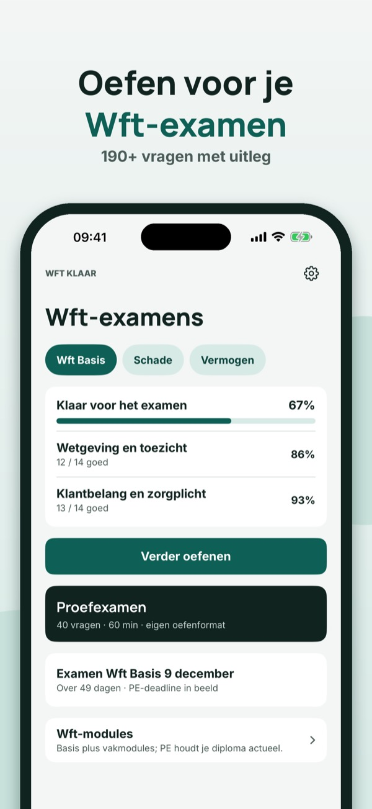
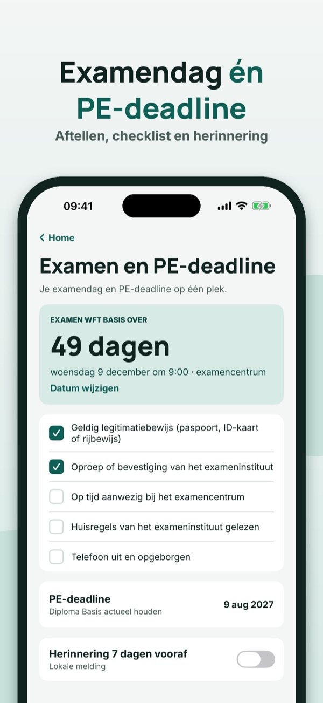
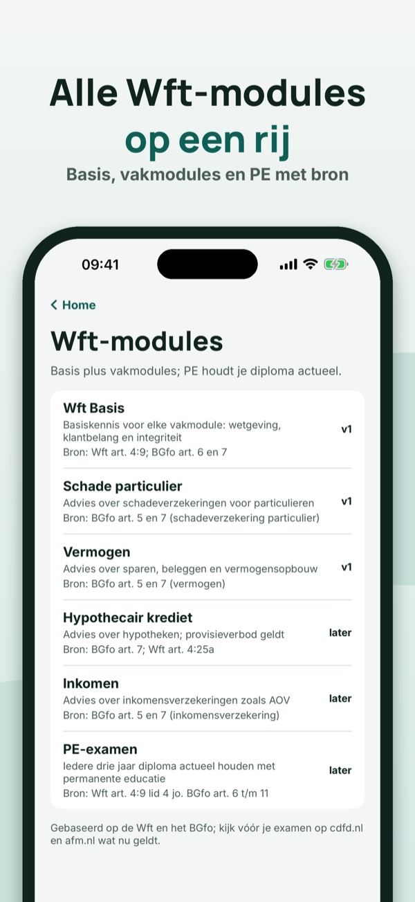
Wft Klaar helpt je oefenen voor de Wft-examens Basis, Schade en Vermogen – met eigen vragen per eindterm en uitleg bij elk antwoord.
Je kunt 20 vragen per examen, de begrippenlijst, het moduleoverzicht en de checklist zonder aankoop gebruiken. De volledige versie is een eenmalige aankoop die alle vragen, proefexamens en statistiek ontgrendelt. Geen abonnement.
Wft Klaar is examentraining en geen financieel advies. Niet verbonden aan het CDFD, de AFM of een examenbureau.
Terms of Use (EULA): https://www.apple.com/legal/internet-services/itunes/dev/stdeula/
Privacy: https://baytechbv.github.io/privacy/finanslicens-eu/
Öva inför licenstestet
Öva inför licenstestet för finansbranschen: frågor med förklaring, övningsprov och provdag med påminnelse – på svenska och utan internet.
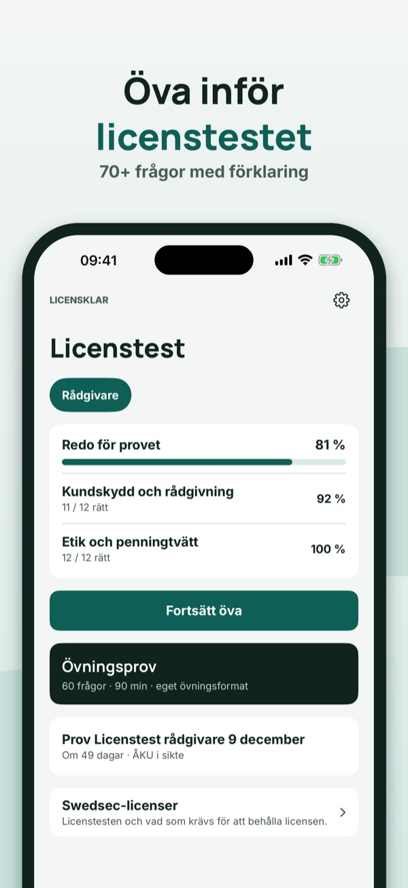
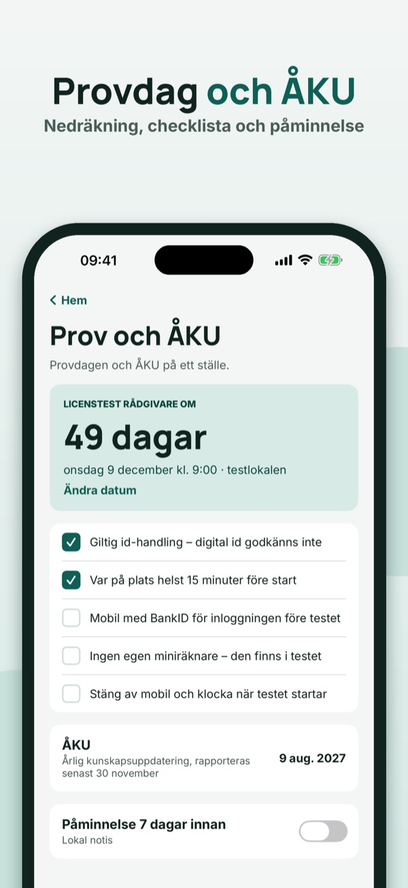
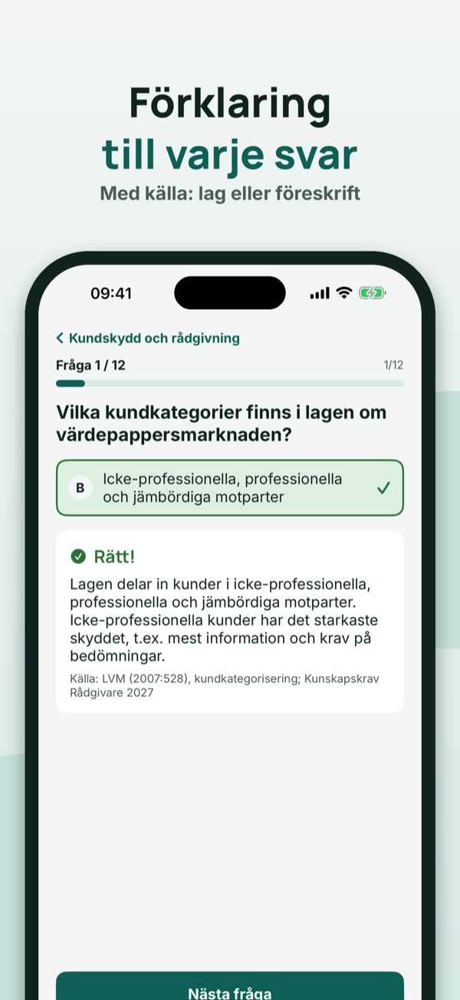
Licensklar hjälper dig att öva inför licenstestet för rådgivare i finansbranschen – med egna frågor och förklaring till varje svar.
Du kan öva på 20 frågor per prov och använda ordlistan och checklistan utan köp. Fullversionen är ett engångsköp som låser upp alla frågor, övningsprov och statistik. Ingen prenumeration.
Licensklar är provträning, inte finansiell rådgivning, och är inte kopplad till SwedSec eller Finansinspektionen.
Terms of Use (EULA): https://www.apple.com/legal/internet-services/itunes/dev/stdeula/
Privacy: https://baytechbv.github.io/privacy/finanslicens-eu/
Øv til autorisasjonsprøven
Øv til autorisasjonsprøven for finansbransjen: spørsmål med forklaring, prøvetester og prøvedag med påminnelse – på norsk og uten nett.
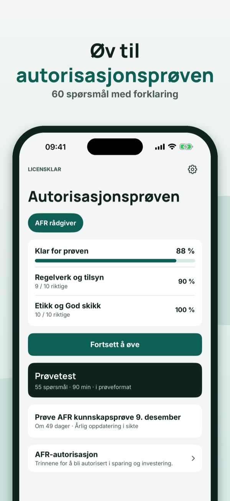
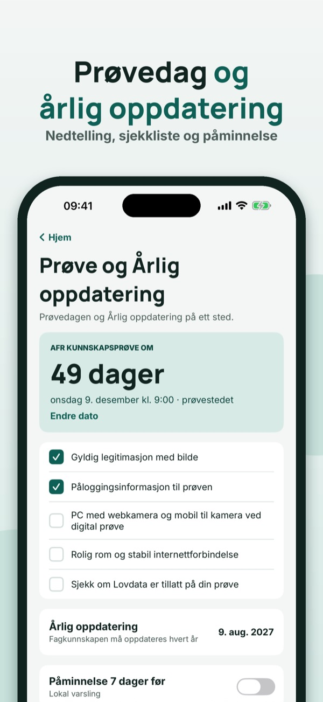
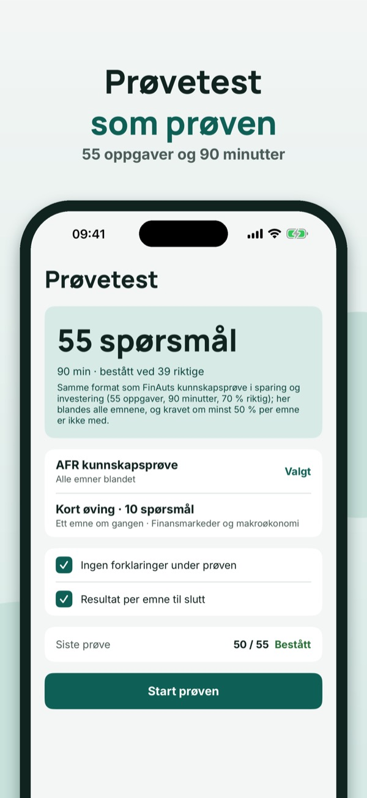
Licensklar hjelper deg å øve til autorisasjonsprøven for finansielle rådgivere – med egne spørsmål og forklaring til hvert svar.
Du kan øve på 20 spørsmål per prøve og bruke ordlisten og sjekklisten uten kjøp. Fullversjonen er et engangskjøp som låser opp alle spørsmål, prøvetester og statistikk. Ingen abonnement.
Licensklar er eksamenstrening, ikke finansiell rådgivning, og er ikke tilknyttet AFR eller Finanstilsynet.
Terms of Use (EULA): https://www.apple.com/legal/internet-services/itunes/dev/stdeula/
Privacy: https://baytechbv.github.io/privacy/finanslicens-eu/
Für die Sachkundeprüfung
Übe für die Sachkundeprüfung §34d und §34f: Fragen mit Erklärung, Prüfungssimulation und Prüfungstag mit Erinnerung – auf Deutsch und offline.
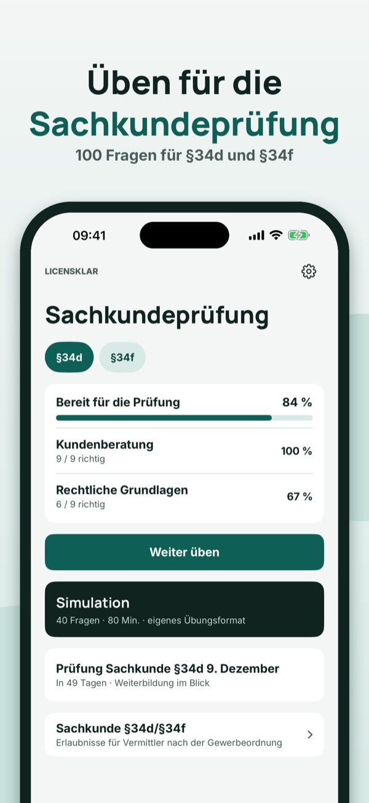
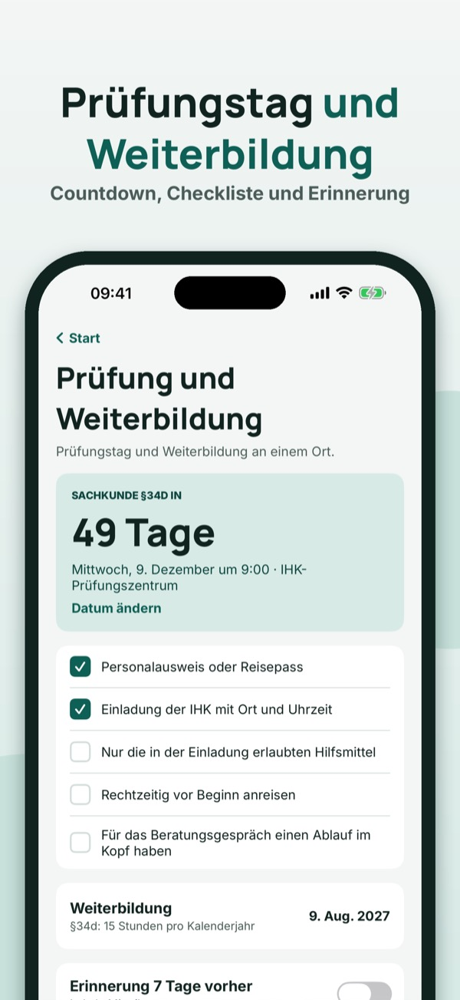
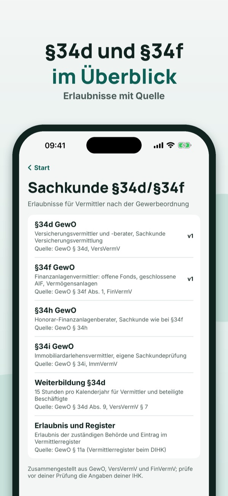
Licensklar hilft dir, für die Sachkundeprüfung Versicherungs- und Finanzanlagenvermittlung zu üben – mit eigenen Fragen und Erklärungen.
20 Fragen pro Prüfung, die Begriffe und die Checkliste kannst du ohne Kauf nutzen. Die Vollversion ist ein Einmalkauf und schaltet alle Fragen, Simulationen und die Statistik frei. Kein Abo.
Licensklar ist Prüfungstraining, keine Finanzberatung, und nicht mit der IHK oder einer Behörde verbunden.
Terms of Use (EULA): https://www.apple.com/legal/internet-services/itunes/dev/stdeula/
Privacy: https://baytechbv.github.io/privacy/finanslicens-eu/